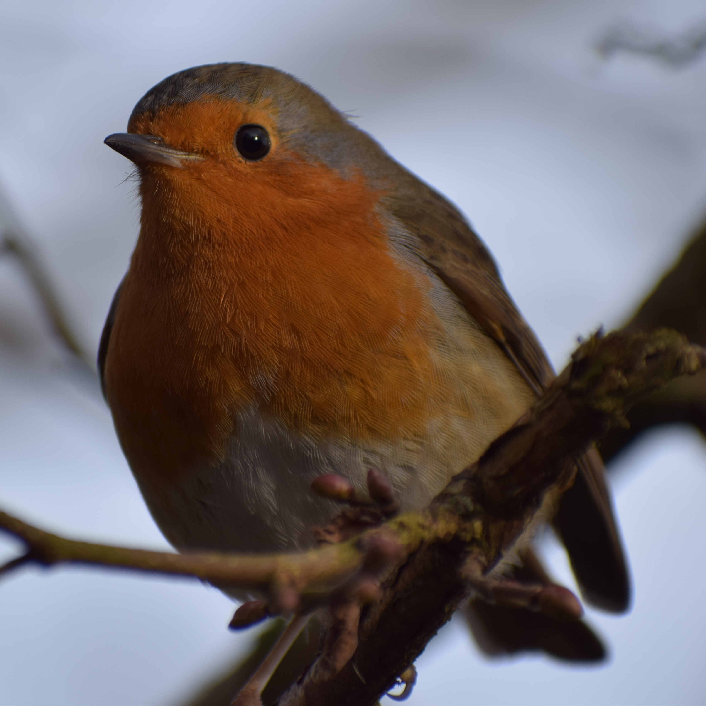

Here are most of my best photos of nature. As a keen birdwatcher in the UK, most of my nature pictures are of British bird species, but I've also included the odd picture of interesting plants, fungi, and some landscape pictures too. These were all taken with my Nikon D3300 camera, with either the AF-P Nikkor 18-55mm DX lens (this was mainly used for the landscape photos) or usually with my AF-P Nikkor 70-300mm DX-VR lens (used for almost all my bird photos). I hope you enjoy them all!